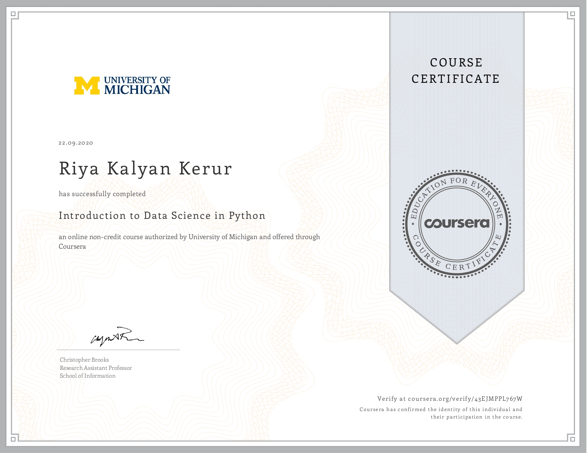

July 2022 – Feb 2023
Designed a dual-authentication system by integrating RFID-based user verification with facial recognition, aimed at reducing unauthorized access in physical security environments. Programmed facial recognition using Python, Dlib, and CNN embeddings, enabling the system to detect and encode facial features with around 78% accuracy, even under variable lighting and angles. Deployed the solution on Raspberry Pi, ensuring fast and reliable edge processing without needing cloud support, and successfully demonstrated improved security performance compared to single-factor authentication systems.
Jan 2022 – May 2022
Designed and implemented a secure communication protocol enabling real-time data exchange between distributed sensors and a central monitoring system, incorporating end-to-end encryption
to ensure data confidentiality and integrity. Developed and trained an Isolation Forest anomaly detection model using Python and scikit-learn, successfully reducing false positive rates by 30%.
Created a user-friendly monitoring dashboard with OAuth 2.0 authentication and role-based access control, enhancing system security and improving authorized user access management.
Certification
Introduction to Computer Science
C, Python, Arrays, Hash Tables, Linked Lists, Stacks, Queues, Trees

Introduction to Data Science in Python
Data Cleaning & Preprocessing, Exploratory Data Analysis (EDA), Statistic Modeling, Regression

Machine Learning For All
Python, Scikit-learn, NumPy, Pandas, K-Means Clustering, Supervised & Unsupervised Learning